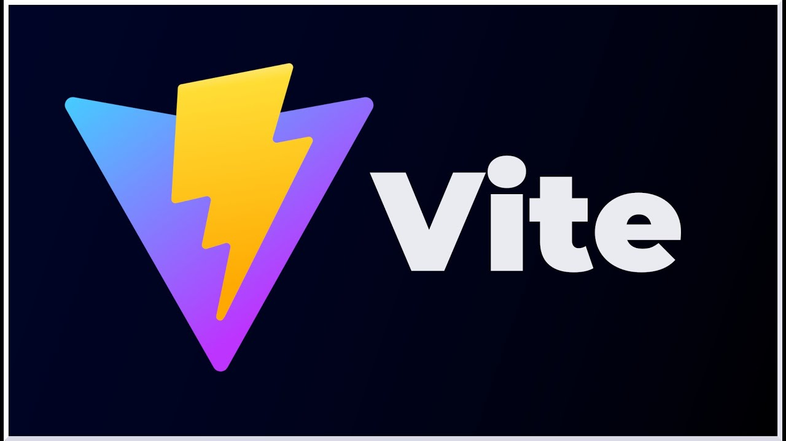

React: es una biblioteca de JavaScript para construir interfaces de usuario. Facilita la creación de aplicaciones web interactivas y dinámicas mediante el uso de componentes reutilizables y un modelo de datos unidireccional.

Vite: es una herramienta de desarrollo que mejora la experiencia de desarrollo de aplicaciones web. Proporciona una configuración mínima y un servidor de desarrollo rápido, así como un sistema de construcción optimizado.

Node.js: es un entorno de ejecución para JavaScript que permite ejecutar código JavaScript en el servidor. Facilita la creación de aplicaciones de red escalables y de alto rendimiento, utilizando un modelo de E/S no bloqueante.
Pasos para crear un proyecto con React
Para iniciar un nuevo proyecto con React, sigue estos pasos:
npx create-react-app nombre-del-proyecto - Este comando crea un nuevo proyecto de React con la configuración predeterminada.cd nombre-del-proyecto - Navega al directorio del proyecto.npm start - Inicia el servidor de desarrollo y abre la aplicación en el navegador.
Pasos para crear un proyecto con Vite
Para iniciar un nuevo proyecto con Vite, sigue estos pasos:
npm create vite@latest nombre-del-proyecto --template react - Crea un nuevo proyecto Vite con la plantilla de React.cd nombre-del-proyecto - Navega al directorio del proyecto.npm install - Instala las dependencias del proyecto.npm run dev - Inicia el servidor de desarrollo y abre la aplicación en el navegador.
Pasos para crear un servidor básico con Node.js
Para crear un servidor básico con Node.js, sigue estos pasos:
mkdir nombre-del-proyecto - Crea un nuevo directorio para tu proyecto.cd nombre-del-proyecto - Navega al directorio del proyecto.npm init -y - Inicializa un nuevo proyecto Node.js con un archivo package.json predeterminado.npm install http - Instala el módulo http si es necesario.- Luego, crea un archivo
server.js con el siguiente código:
const http = require('http');
const server = http.createServer((req, res) => {
res.statusCode = 200;
res.setHeader('Content-Type', 'text/plain');
res.end('Hola Mundo');
});
server.listen(3000, () => {
console.log('Servidor corriendo en http://localhost:3000');
});
node server.js - Inicia el servidor Node.js.